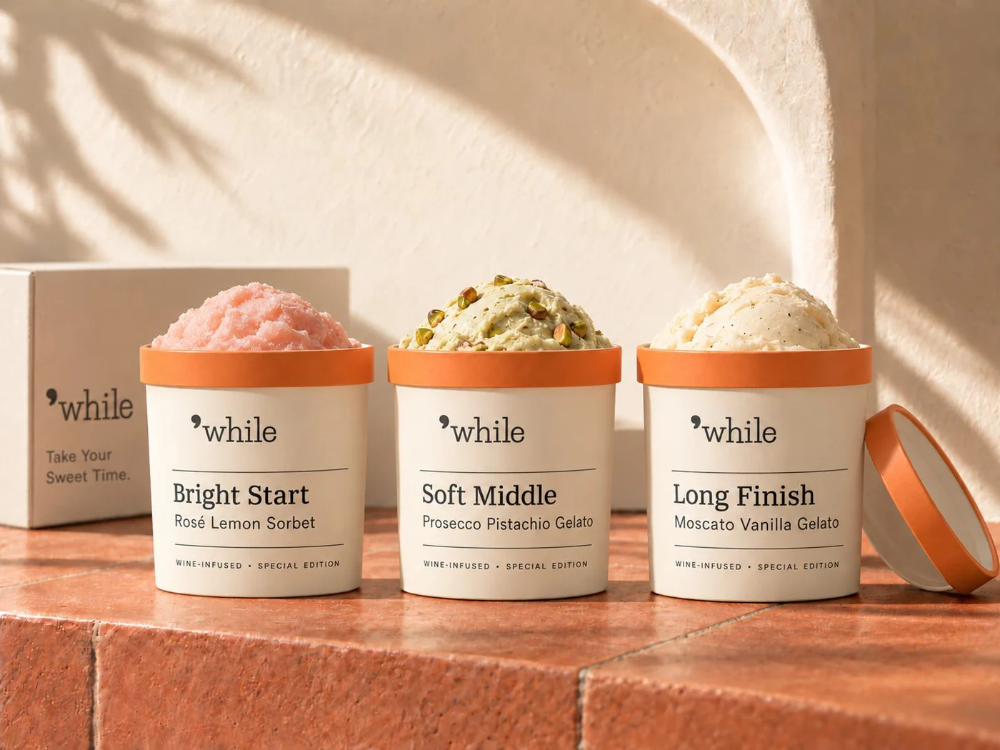

Print / 4 columns
7 × 8.5in. Inside 0.65in; outside 0.5in. Top 0.55in; bottom 0.65in. Gutter 0.15in.
Shared alignment, consistent margins, and a deliberate hierarchy connect every format.
Let typography, imagery and supporting graphics work in a shared hierarchy.

7 × 8.5in. Inside 0.65in; outside 0.5in. Top 0.55in; bottom 0.65in. Gutter 0.15in.
One shared container, up to 1,200px wide. Six equal columns with 24px gutters. Use 3 + 3 or 2 + 2 + 2 column groups. All page edges align.
Stack content at 760px. Use 24px side margins and 16px gutters. Keep reading order, labels and controls intact.